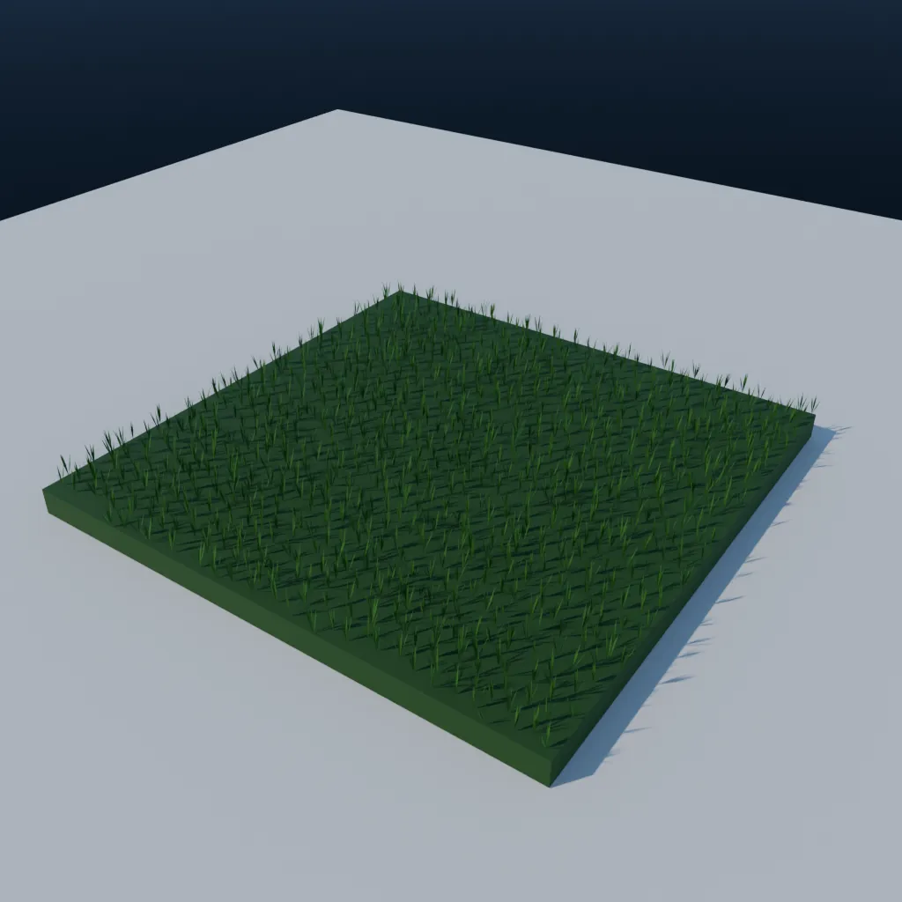
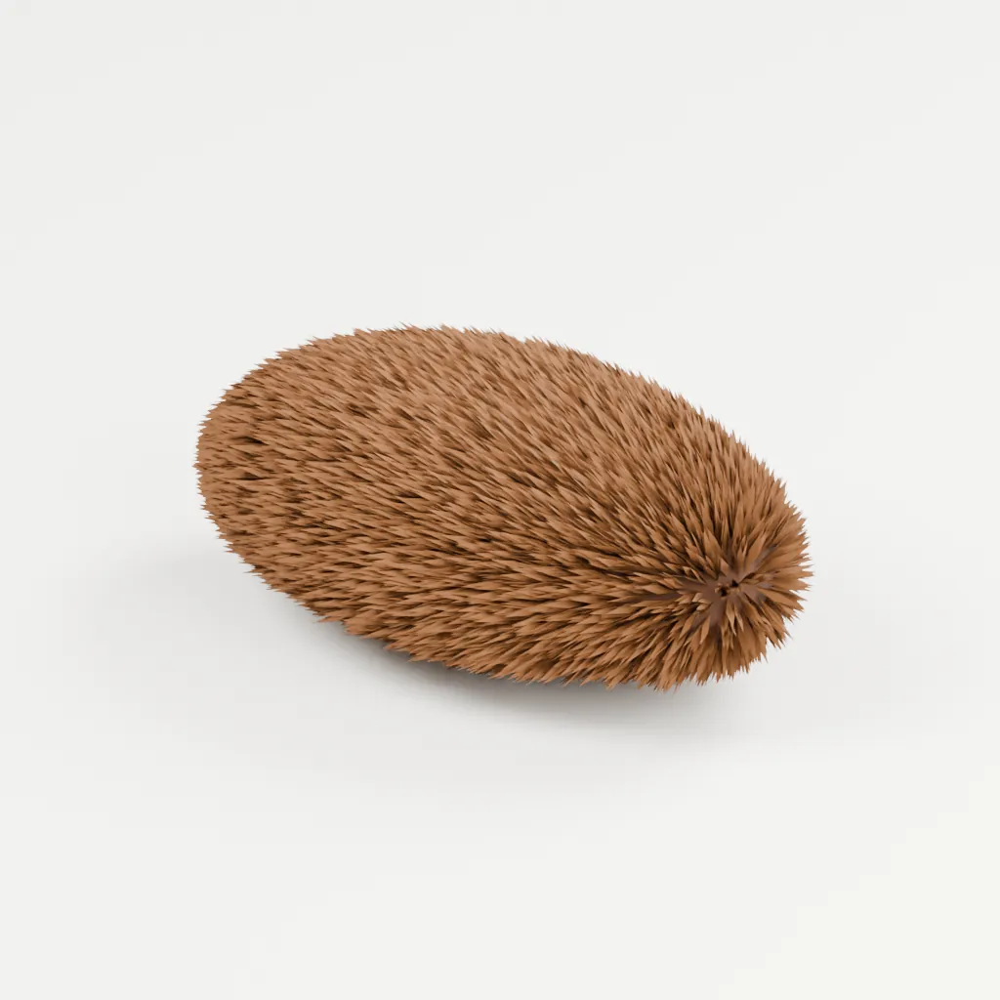

Build the structure first, then distribute leaves or pile over it. Keep the carrier visible and spend faces where they change the silhouette.
A first lawn

import sand3d as s3d
def lawn(seed=0):
ground = s3d.box("ground", 1000, 1000, 50)
s3d.material(ground, "grass", color="#1f3d0a")
sites = s3d.Frames(f for f in s3d.scatter(3500, ground, seed=seed+7) if f.normal.z > .9)[:1000]
grass = s3d.tufts("grass", sites, height=45, width=3, blades=5, lean=25, seed=seed+8)
s3d.material(grass, "grass", color="#2e590d")
return s3d.group("lawn", ground, grass)
Green ground carries up to 1,000 tufts on a one-square-metre patch. Only upward-facing sites survive the surface sample.
A lawn has two layers of work: the ground gives continuous green coverage, and the blades give its close silhouette. Use green per-face colour on a supported solid. Sample that ground, keep upward sites, then pass the surviving Frames to tufts. Count the accepted sites, not the requested sample count.
Start around 500–2,000 tufts per square metre, with 3–5 blades per tuft. In millimetres, divide area by 1,000,000 to get square metres. Let green ground cover the distance; adding blades to conceal every gap spends faces without changing the distant shape.
scatter allows at most 4096 sites per call. For larger lawns, use grid and snap to find the surface under candidate positions. A 10 m² lawn at 1,000 tufts/m² with five blades per tuft needs 100,000 triangles before its ground and props. Reserve that cost within a suggested 150k–300k whole-asset budget.
Trunks, branches and leaves
Use branches to make paths and leaf-end frames. Turn each axis into a tapering wire, or sweep a profile along it with a matching size law. The tips can carry buds. These paths describe structure; they do not create wood or foliage by themselves.
Vary leaf scale, orientation and clustering with derived seeds, so changing foliage does not also scramble the trunk. Prefer simple broad leaves that remain legible at review size. Leave openings through the crown to show the branches, and keep the roots in contact with the ground.
Budget the crown
Crown cost is leaf count multiplied by faces per leaf, plus the twigs. Thousands of finely tessellated leaves can dominate the whole object. Reduce the leaf mesh before increasing the number of leaves; judge the crown at the size it will be seen.
Three branch structures
The same branching method with stiff, rising and weeping axes. Curvature changes the silhouette before foliage is added.
Moss starts in the ground mesh itself. Use displace for cushions a few millimetres high, with features roughly a tenth of the patch width. Mix two greens by noise, then add short pile for the fuzzy edge: about 7 mm high, three blades per tuft, lean 45 degrees. A full set of 4096 sites on 0.64 m² costs 24,576 blade triangles, before the carrier; filtering surface sites reduces that count.
For patches, share one noise mask in the range 0..1 between the cushions, colour and site selection. Leave soil where the mask is low. A full carpet drops the mask and carries the cushions and green colour throughout.
A single mask raises cushions, selects green ground and retains the short pile. Soil remains visible between patches.
Nap and combed fur
For textile nap, sample the fabric carrier and retain the visible side. Short, wide cones make clumps; thin blades make bristles. Leave some carrier visible between clumps. The default site normal produces standing pile; a tangent direction field combs it along the surface.
For animal fur, use dense, short, thin blades on a matte material such as plastic with roughness about .85. Cones read as scales. The white sheen of fabric can grey dark fur.

import numpy as np
import sand3d as s3d
def fur(seed=0):
body = s3d.scale(s3d.sphere("carrier", 240), (1.6, 1, .7))
s3d.material(body, "plastic", color="#4b2d19", roughness=.85)
sites = s3d.Frames(f for f in s3d.scatter(4096, body, seed=seed+2) if f.normal.z>-.5)
pile = s3d.tufts("fur", sites, height=34, width=6, blades=7, lean=14, direction=comb, seed=seed+6)
s3d.material(pile, "plastic", color="#6b4423", roughness=.85)
return s3d.group("combed_fur", body, pile)
def comb(x, y, z, n):
n = np.asarray(n).T
t = np.array([-1.0, 0, -.25])
return t - (n @ t)[:, None] * n + .3 * n
The direction field combs blades toward -X along a curved carrier, with a small lift away from the surface.
How the comb field works
Start with a preferred direction t. Remove its normal component with t - (n @ t)[:, None] * n, then add .3 * n to lift the hair slightly. The result follows the local surface instead of passing through it. The example uses t = [-1, 0, -.25].
The callback receives normals as a 3-by-N array; transposing gives one normal per row for this calculation. See tufts for the field contract and blade dimensions. Query the carrier before grouping it with its tufts: the sampled frames and the new mesh must share one parent space.
Scenes to adapt
A supported lawn
Start with this small patch, count the accepted sites, then scale the sampling plan to the scene's area.
The program, 10 lines
import sand3d as s3d
def lawn(seed=0):
ground = s3d.box("ground", 1000, 1000, 50)
s3d.material(ground, "grass", color="#1f3d0a")
sites = s3d.Frames(f for f in s3d.scatter(3500, ground, seed=seed+7) if f.normal.z > .9)[:1000]
grass = s3d.tufts("grass", sites, height=45, width=3, blades=5, lean=25, seed=seed+8)
s3d.material(grass, "grass", color="#2e590d")
return s3d.group("lawn", ground, grass)
A combed carrier
Replace the carrier and retain the tangent projection to carry the same combing method onto another shape.
The program, 17 lines
import numpy as np
import sand3d as s3d
def fur(seed=0):
body = s3d.scale(s3d.sphere("carrier", 240), (1.6, 1, .7))
s3d.material(body, "plastic", color="#4b2d19", roughness=.85)
sites = s3d.Frames(f for f in s3d.scatter(4096, body, seed=seed+2) if f.normal.z>-.5)
pile = s3d.tufts("fur", sites, height=34, width=6, blades=7, lean=14, direction=comb, seed=seed+6)
s3d.material(pile, "plastic", color="#6b4423", roughness=.85)
return s3d.group("combed_fur", body, pile)
def comb(x, y, z, n):
n = np.asarray(n).T
t = np.array([-1.0, 0, -.25])
return t - (n @ t)[:, None] * n + .3 * n
 sand3d
sand3d GitHub
GitHub